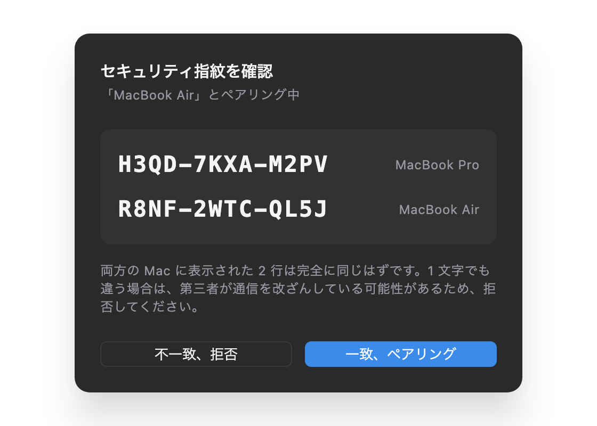
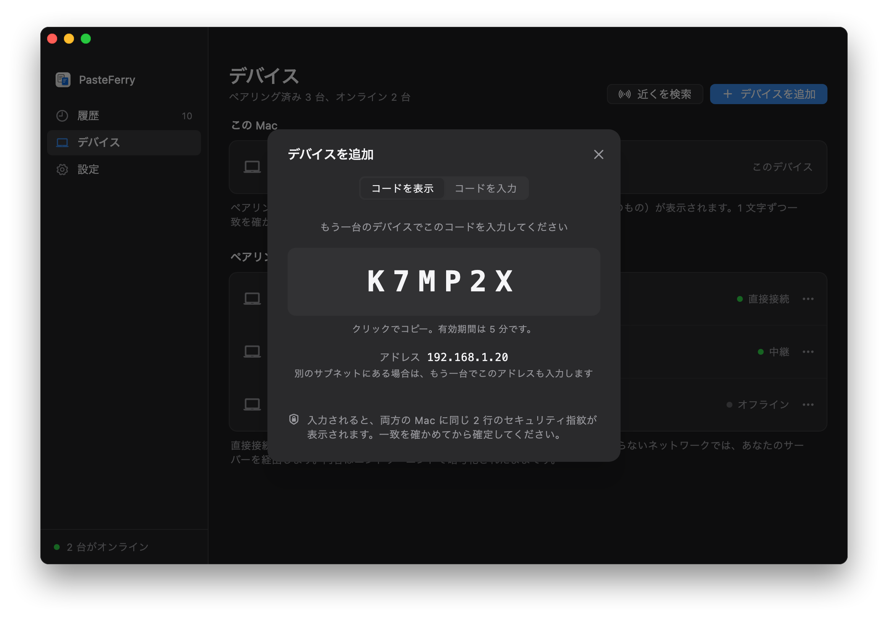
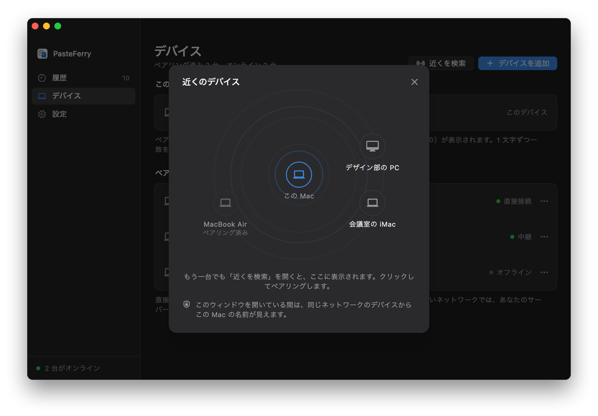
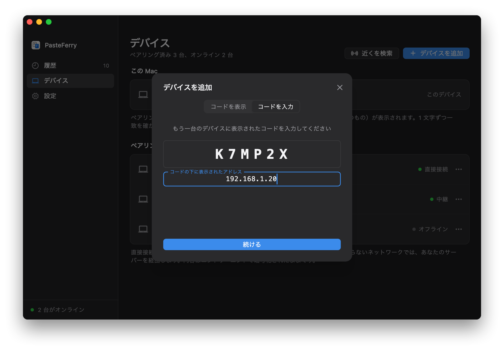

サーバーは要らない
同じネットワークにある 2 台は、mDNS でお互いを見つけ、接続情報を直接やり取りして、暗号化された直接接続を結びます。サーバーも、電源を入れたままのコンピューターも要りません。
- 自動で見つける。各コンピューターは mDNS で LAN に自分を知らせます。流すのは毎日変わる匿名の識別子だけで、誰のコンピューターかはわかりません。デバイス名を加えるのは「近くを検索」を開いている間だけです。
- 直接接続。コピーした内容は 2 台のあいだを直接流れ、速さは LAN の速さそのままです。
- 安全性はそのまま。ペアリングで 2 行の指紋を照合し、その後のメッセージはすべて署名付き。同じネットワークの他人があなたのデバイスになりすますことはできません。
始める前に
- 同じネットワーク
- 2 台が同じルーターにつながっていれば大丈夫です。Wi‑Fi と有線が混ざっていてもかまいません。ゲストネットワークやクライアント分離が有効な Wi‑Fi ではデバイス同士が見えず、会社では有線と Wi‑Fi のサブネットが分かれていることもよくあります。その場合は下の別のサブネットへ。
- Windows ファイアウォール
- 初回起動時に、PasteFerry がファイアウォールを通ってよいか Windows が聞いてくるので、許可します。キャンセルした場合は、PasteFerry の「設定 → ローカルネットワーク」で「許可」をクリックします。管理者の承認を一度だけ求められます。
- macOS のローカルネットワーク
- macOS 15 以降、LAN 上のデバイスに初めて接続するとき、PasteFerry Daemon がローカルネットワーク上のデバイスを探してよいか聞かれるので、許可します。拒否した場合は「システム設定 → プライバシーとセキュリティ → ローカルネットワーク」でオンにします。
- サーバーの入力は不要
- 「設定」のサーバーのアドレスは空欄のままにします。あとでネットワークをまたいで同期したくなったら、サーバーを追加するか Tailscale を使います。ペアリングはそのままです。
ステップ 1
2 台をペアリングする
2 台ごとに一度ペアリングします。まだアプリを入れていなければ、先にはじめかたの手順で入れてください。
- 一台で「デバイス」を開き、「デバイスを追加」をクリックします。5 分間有効な 6 桁のコードが表示されます。
- もう一台でも「デバイスを追加」をクリックし、「コードを入力」に切り替えて入力し、「続ける」をクリックします。
- 両方の画面に同じ 2 行の指紋が表示されます。1 文字ずつ照合して一致していれば確定します。これでコピーが同期されます。


コードなしで：近くを検索
- 両方のコンピューターで「デバイス」を開き、「近くを検索」をクリックします。このウィンドウを開いている間だけ、同じネットワークのデバイスからこのコンピューターの名前が見えます。
- 相手がレーダーに表示されたらクリックします。両方の画面に同じ 2 行の指紋が表示されるので、照合してそれぞれで確定します。
- 同じサブネットの中でだけ使えます。相手が表示されないときは、上のペアリングコードを使ってください。

ステップ 2
別のサブネットにある場合
LAN 内の検出が届くのはひとつのサブネットの中だけです。2 台が別のサブネットにあっても互いに通信できるなら（会社でよくあります）、ペアリング時にアドレスをひとつ入力すれば使えます。
- コードを表示している側では、コードの下にこのコンピューターのアドレスが出ています（例：
192.168.1.20）。 - コードを入力する側で「別のサブネットにありますか？」をクリックし、そのアドレスを入力して「続ける」をクリックします。
- ペアリング後は、2 台ともお互いのアドレスを覚えています。片方のアドレスが変わっても、もう片方が同じなら自動で見つけ直します。両方が変わったときは、「デバイス」でそのデバイスの「…」メニューから「アドレスを入力」を選びます。

サブネット同士がまったく通信できない場合（ゲストネットワークと社内ネットワークが分けられているなど）は、両方から届くコンピューターを経由して中継するしかありません。LAN にサーバーを置くをご覧ください。
よくある質問
もう一台が見つからない
まず 2 台が同じネットワークにあり、どちらもバックグラウンド同期が有効か確認します。次に、コードを入力する側で相手のアドレスを入力してみてください。それで見つかるなら、サブネットが違うか、ネットワークが mDNS を通していません。
それでも見つからなければ、相手のファイアウォールを確認します。Windows なら「設定 → ローカルネットワーク」で「許可」をクリック、Mac なら「システム設定 → プライバシーとセキュリティ → ローカルネットワーク」で PasteFerry Daemon がオンになっていて、macOS のファイアウォールに止められていないかを確かめます。
このネットワークの外でも同期できますか？
アドレスが変わったら？
たいていは何もしなくて大丈夫です。同じサブネットなら mDNS でいつでも見つけ直し、別のサブネットでも片方のアドレスが同じなら自動でつながり直します。両方が変わったときは、「デバイス」でそのデバイスのアドレスをもう一度入力します。
動かさないデスクトップなら、ルーターの DHCP の設定でアドレスを固定しておくこともできます。
同じネットワークの他の人に、自分のコンピューターが見えますか？
PasteFerry のデバイスがあることはわかりますが、誰のものかはわかりません。流しているのは毎日変わる匿名の識別子だけで、デバイス名もデバイス ID も含みません。デバイス名を流すのは「近くを検索」を開いている間だけで、閉じると取り下げます。ペアリングしていないデバイスからのメッセージはすべて捨てられ、ペアリングには両方の画面で指紋の照合が必要です。
どのポートを使いますか？
接続情報のやり取りに UDP 8788（使用中ならランダムなポート）、mDNS に UDP 5353、つながったあとのデータには別のランダムな UDP ポートを使います。ルーターでの設定は何も要りません。
同じネットワークなら、
入れるだけで使える。
バージョン 2.2.0、無料・オープンソース。macOS 13 以降、Windows 10・11、Linux（x64 と ARM64）。
ローカルネットワーク直接接続の技術資料（中国語）